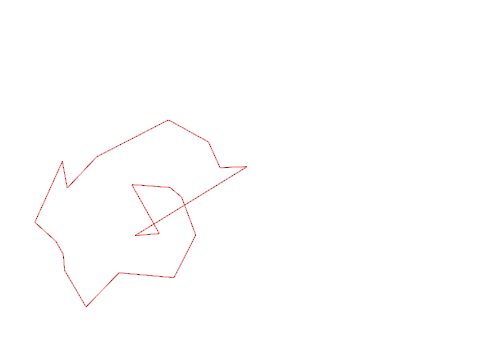
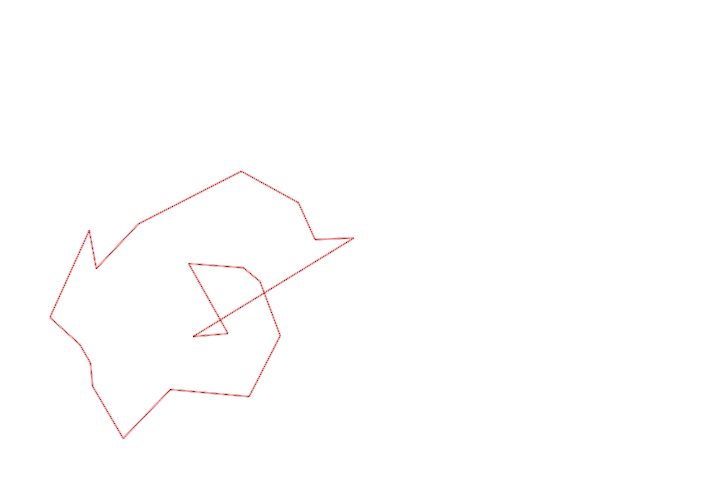

| Control |
Points |
Time Punched |
Distance |
Your Time |
Pace |
Place |
Fastest Time |
Median Time |
% Behind Fastest |
| 127 |
20 |
|
0.06 |
0:00:14 |
03:53 |
10 / 30 |
0:00:01 |
0:00:32 |
1300% |
| 42 |
40 |
|
0.17 |
0:02:10 |
12:44 |
15 / 20 |
0:01:06 |
0:01:52 |
96% |
| 61 |
60 |
|
0.21 |
0:03:45 |
17:51 |
12 / 20 |
0:02:20 |
0:03:34 |
60% |
| 59 |
50 |
|
0.24 |
0:02:27 |
10:12 |
8 / 19 |
0:01:47 |
0:02:30 |
37% |
| 77 |
70 |
|
0.21 |
0:02:38 |
12:32 |
10 / 17 |
0:01:25 |
0:02:33 |
85% |
| 40 |
40 |
|
0.18 |
0:03:02 |
16:51 |
15 / 18 |
0:01:16 |
0:02:38 |
139% |
| 71 |
70 |
|
0.07 |
0:01:52 |
26:39 |
11 / 12 |
0:00:34 |
0:01:00 |
229% |
| 69 |
60 |
|
0.06 |
0:01:46 |
29:26 |
4 / 5 |
0:01:13 |
0:01:26 |
45% |
| 53 |
50 |
|
0.12 |
0:01:51 |
15:25 |
12 / 26 |
0:01:16 |
0:01:51 |
46% |
| 32 |
30 |
|
0.29 |
0:02:25 |
08:20 |
2 / 3 |
0:01:51 |
0:02:25 |
30% |
| 44 |
40 |
|
0.12 |
0:02:11 |
18:11 |
19 / 29 |
0:00:52 |
0:01:49 |
151% |
| 63 |
60 |
|
0.19 |
0:02:07 |
11:08 |
2 / 2 |
0:01:41 |
0:01:54 |
25% |
| 107 |
100 |
|
0.35 |
0:05:07 |
14:37 |
18 / 22 |
0:02:14 |
0:03:49 |
129% |
| 57 |
50 |
|
0.2 |
0:04:39 |
23:15 |
15 / 22 |
0:01:54 |
0:03:53 |
144% |
| 92 |
90 |
|
0.12 |
0:03:48 |
31:40 |
7 / 18 |
0:02:10 |
0:04:22 |
75% |
| 47 |
40 |
|
0.12 |
0:02:03 |
17:05 |
4 / 16 |
0:01:07 |
0:04:40 |
83% |
| 60 |
60 |
|
0.57 |
0:07:19 |
12:50 |
1 / 1 |
0:07:19 |
0:07:19 |
0% |
| 38 |
30 |
|
0.11 |
0:01:11 |
10:45 |
6 / 15 |
0:00:00 |
0:01:15 |
-% |
| 126 |
20 |
|
0.24 |
0:02:31 |
10:29 |
3 / 3 |
0:02:16 |
0:02:17 |
11% |
| Finish |
0 |
|
0.17 |
0:00:52 |
05:05 |
3 / 9 |
0:00:31 |
0:00:57 |
67% |
Total Distance Covered: 3.8km
Points Scored: 980
Late Penalty: 0
Final Score: 980
Total Time: 0hours 53minutes 58seconds
Efficiency: 257.89 points/km
 
